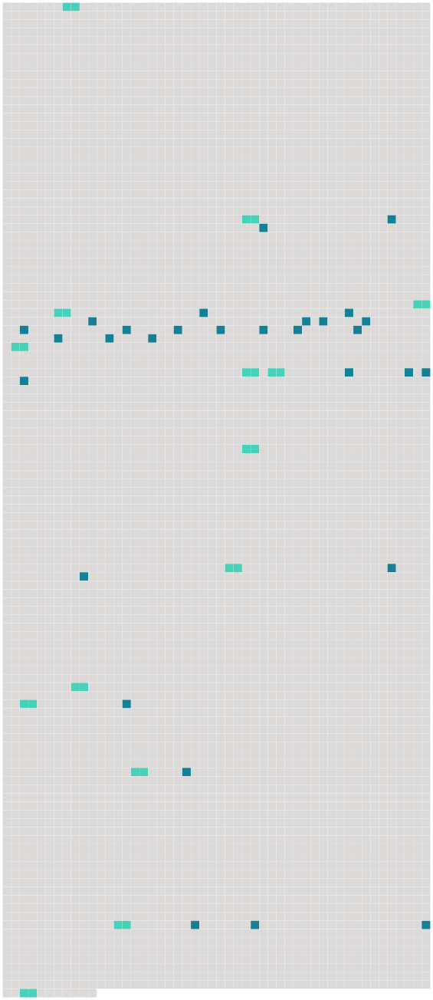

Longueur nb maillons : 43 mentions |
|
À ce moment, un ordre écrit [du commandant] , de la barque qui venait de nous remorquer fut expédié au capitano, qui reçut ce papier au bout d'un bâton ; et on alluma du feu, pour le faire passer à travers la fumée avant de le lire. [54 phrases] [Le commandant] est venu nous apporter la nouvelle que notre quarantaine est abrégée de cinq jours. [Il] m'a dit qu'on devait toujours demeurer content dans l'accomplissement des desseins de la Providence, etc.
Notre réponse n'a été qu'une suite de sanglots, aussi n'a-t [-il] pas tardé à s'éloigner. [18 phrases] « [Le commandant] est venu avec des gardes et [a fait] monter pour nous un lit fort propre avec des rideaux, envoyé par Filicchi. [Il] a fait dresser des bancs sur lesquels nous pourrons coucher, Anna et moi, et [il] y a inscrit nos noms : Signor Gugliemo, Signora Elisabetta, Signorina, Anna-Maria. Le ton de [sa] voix, qui de nouveau m'exhortait avec douceur à me tourner vers le bon Dieu, m'a fait lever les yeux sur [lui] [Son] grand chapeau, qu' [il] venait d'ôter, m'avait caché jusqu'alors [ses] cheveux blancs, avec une bonne » et douce figure. [Il] m'a dit : “ [J'] ai été marié ; [j'] avais une femme que [j'] aimais, que [j'] aimais, ah!! … elle [m'] a donné une petite fille, et elle est morte presqu'aussitôt après, en [me] recommandant son enfant.
» [1 phrases]
» [7 phrases] « William s'est trouvé mieux ; il est tout encouragé par le docteur Tutilli qui est plein de bontés pour lui, comme l'est aussi [le commandant] [Celui -ci] parait maintenant me comprendre un peu ; [il] m'a encore répété : « [J'] aimais [ma] femme, [je] l'aimais, et elle est morte ; e che volete, Signora. [23 phrases] [Notre commandant] nous a encore fait grâce de cinq jours ; le 19 décembre nous serons libres. [29 phrases] » — [Notre commandant] est venu cet après-midi, et voyant le pauvre William dans un violent accès de fièvre, [il] s'est : écrié : « Dans cette chambre, que de souffrances [j'] ai vues déjà!! [25 phrases] On les a entassés tous dans une seule chambre aux murailles nues, avec une cruche d'eau, en attendant que [le commandant] trouvât le temps de s'occuper d'eux. [4 phrases] [Le capitano] nous envoie jusqu'à des marrons et des fruits de [sa] propre fable ; eux, ils n'ont pas même de pain. [17 phrases] Quand [le commandant] est venu, je [lui] ai dit que j'étais bien triste pour le pauvre Filippo : « Ah, Signora, il n'est pas à plaindre : voici deux ans qu'il s'est marié avec une belle jeune femme de seize ans ; il a deux enfants et il reçoit par jour, trois sols et six deniers. [52 phrases] Carleton est venu à la tombée de la nuit ; puis [notre commandant] , tout bon, tout empressé. [Il] a été effrayé du calme où [il] a trouvé William, et désespéré de voir que j'allais rester seule avec lui ; car le docteur [lui] avait dit que, malgré le soulagement actuel, tout annonçait qu'il pouvait s'éteindre on quelques heures. [16 phrases] « Dès le matin, sitôt que le jour a paru, agitation, désir de partir, de changer de place — M. Hall est venu avec M. Filicchi et [le commandant] ; ils ont promis de revenir. |
 |
Il est possible de télécharger la ressource sur la page Ortolang |
Si vous avez des questions ou vous voyez des erreurs, merci d'envoyer un mail à silvia.federzoni89@gmail.com |